Gotham Surveillance
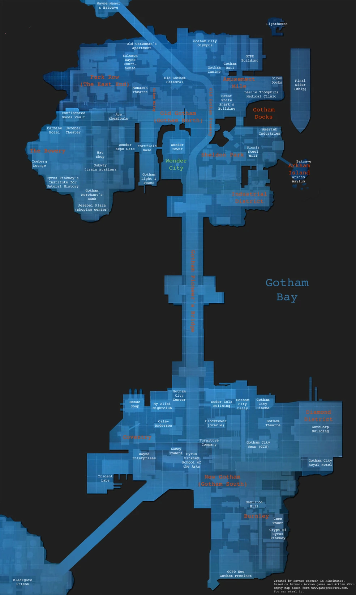
NOTE FOR ROBIN: IN CASE OF A COMPROMISE, THE PASSWORD HAS BEEN SPLIT ACROSS SEPARATE DATA FILES. RECONSTRUCT THE FULL PHRASE. PASSWORD MUST BE UPPERCASE AND CONTINOUS.
Gotham Crime Feed
Live Reports from Vicki Vale
FIRST PASSWORD HINT: ALFRED
Known Threats In Gotham

Joker
Absolute maniac. TAKE DOWN IMMEDIATELY

Harley Quinn
Harleen Quinzel. Psychiatrist turned into Joker's Girlfriend. she's almost as crazy as him. THREAT LEVEL: MEDIUM

The Riddler
Edward Nigma. Obsessed with puzzles and thinks he's intelligently dominant. THREAT LEVEL: MINIMUM

Bane
No other alias. Extremely intelligent Wrestler pumped with Venom. Broke the Bat's Back. THREAT LEVEL: DANGEROUS

Penguin
Ozwald Cobblepot. The Crime boss of Gotham’s underground. Waddles alot. THREAT LEVEL: MINIMUM

Poison Ivy
Pamela Ivy. Once was a shy botanist, now is an Eco-terrorist. Extremely Seductive. THREAT LEVEL: IMMENSE

Mr. Freeze
Victor Fries. A Crygenicist who is doing everything in his power to save his wife Nora. Extremely cold. THREAT LEVEL: DANGEROUS

Scarecrow
Johnathan Crane. A brilliant Pschologist who turns fear into a weapon. Created Fear Toxin. THREAT LEVEL: DANGEROUS(mentally).

Clayface
Basil Karlo. Was once a famous movie actor. Shape-shifts from mud. THREAT LEVEL: DANGEROUS

Killer Croc
Waylon Jones. Has a rare condition that gives him reptilian skin. Big Teeth. TREAT LEVEL: DANGEROUS

Two-Face
Harvey Dent. Was once Gotham's District Attorney who's face was splashed with acid. Has severe split-personality disorder. THREAT LEVEL: MEDIUM

Ra's Al Ghoul
Trained The Batman and holds access to the Lazarus Pit. Has a tendecy to die and come back. THREAT LEVEL: IMMENSE

Black Mask
Roman Sionis. Gotham's Other crime boss. Never takes off that mask. THREAT LEVEL: MINIMUM

Victor Zsasz
Serial Killer. THREAT LEVEL: DANGEROUS
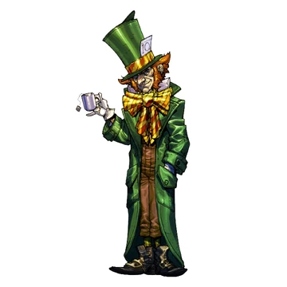
The Mad Hatter
Jervis Tetch. Has an obsession with the book Alice in Wonderland. around 3 hats tall. THREAT LEVEL: MINIMUM
Batmobile Systems

ALL CURRENT BATSUITS
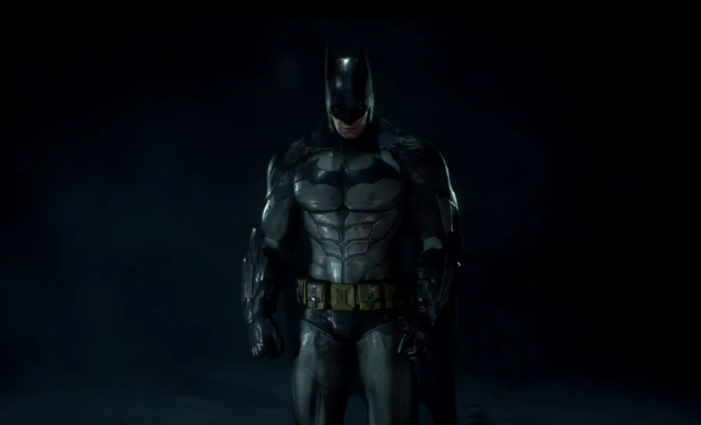
Batsuit
Standard Batman Outifit
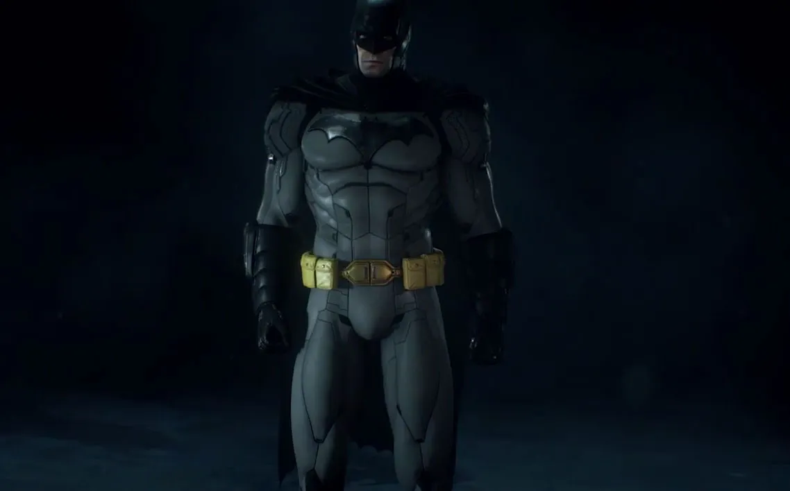
Batsuit 52
Outfit from the Justice League
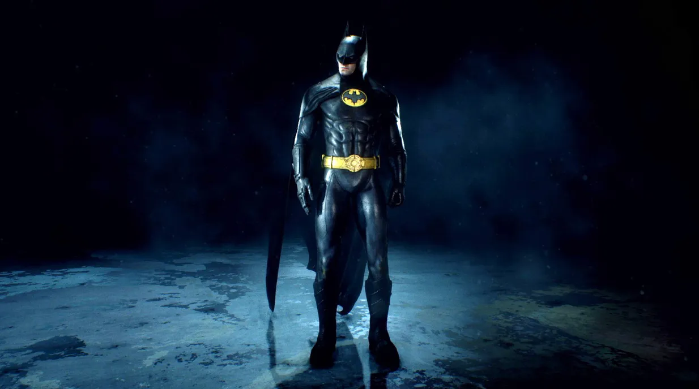
Batsuit 89
Outfit for feeling Cinematic
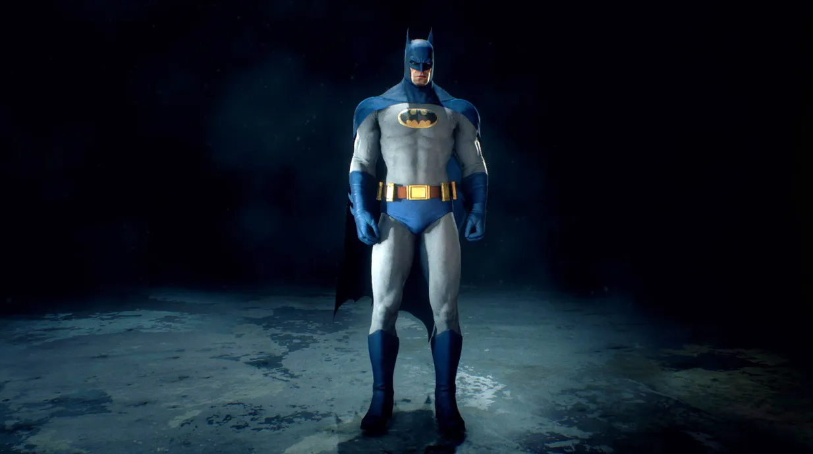
Batsuit 70
Outfit for feeling Nostalgic
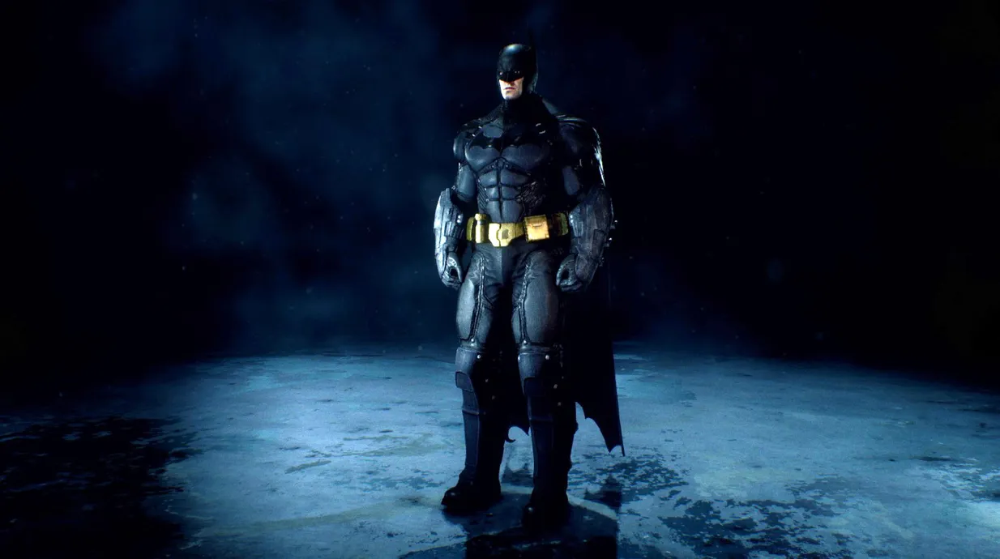
Origin Batsuit
Outfit from 2 years of nights
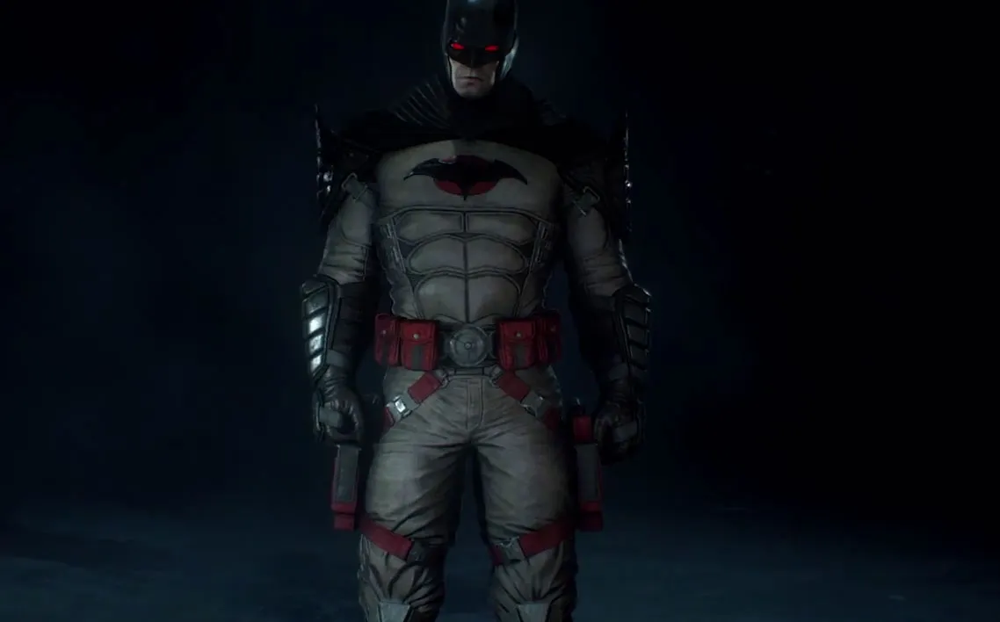
Flashpoint Batsuit
Father would be proud.
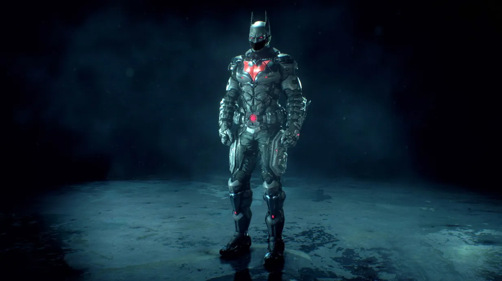
Beyond Batsuit
Outfit for feeling Younger
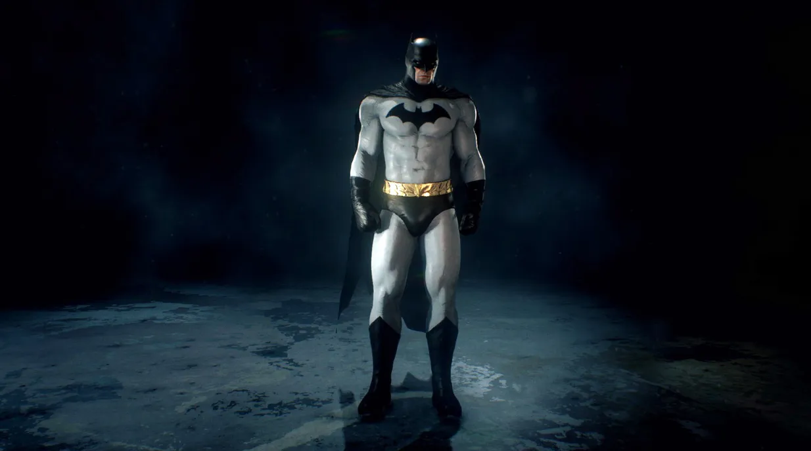
Batsuit
Outfit from the golden age of heroes
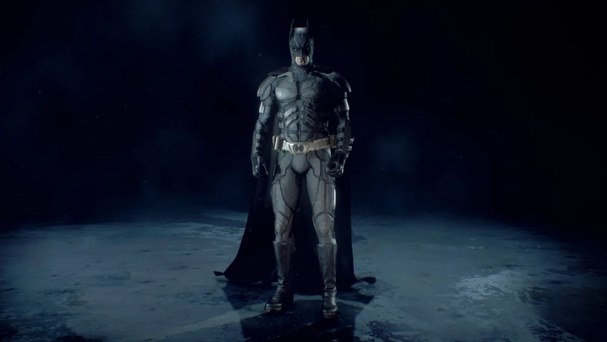
The Dark Knight Batsuit
Outfit for not wearing hockey pads
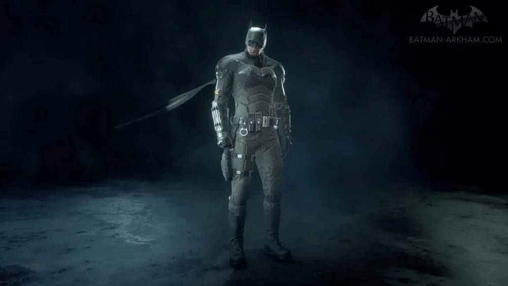
The Batsuit
Outfit if something is in the way
SECOND PASSWORD HINT: DA
Utilities
ALL RESOURCES AVAILABLE AND ONLINE

Batarang
Precision throwing weapon
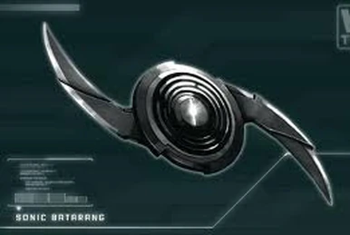
Sonic Batarang
Throwing weapon that sends soundwaves around Target
Grapple Gun
Rapid vertical movement
Smoke Pellets
Escape into cover
EMP Charge
Disables electronics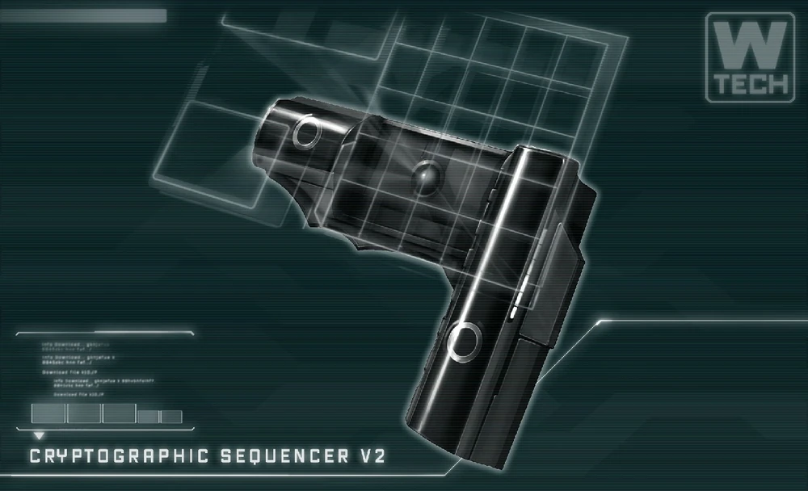
Cryptographic Sequencer
hacks into security terminals and monitor radio communication channels.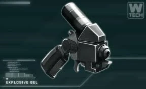
Explosive Gel
Destroys structures and Stuns enemies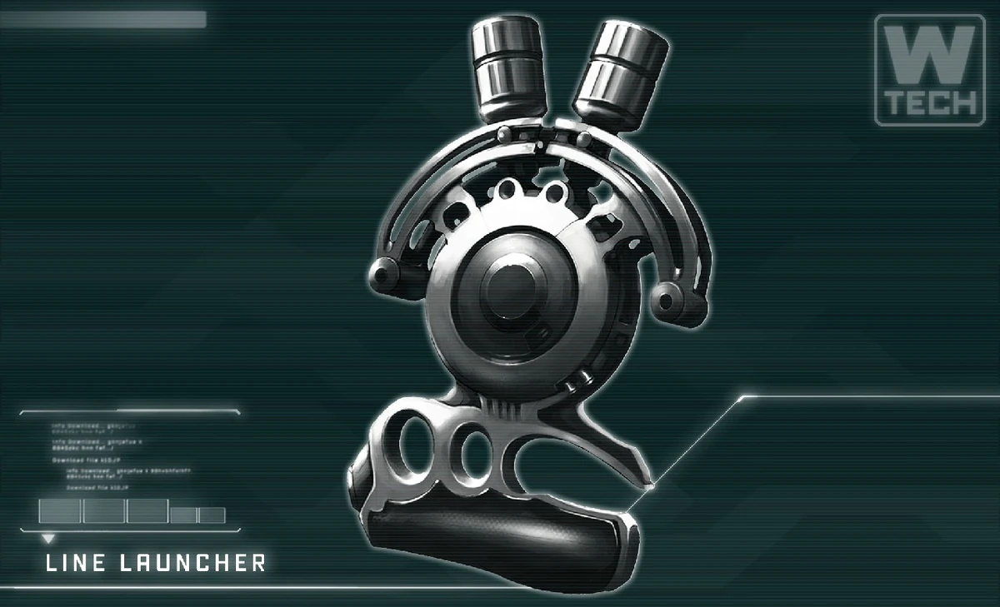
Line Launcher
Useful to get across large gaps and Traverse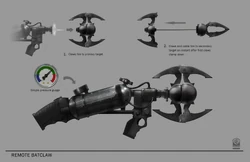
Remote Claw
Targets Two Objects and pulls them together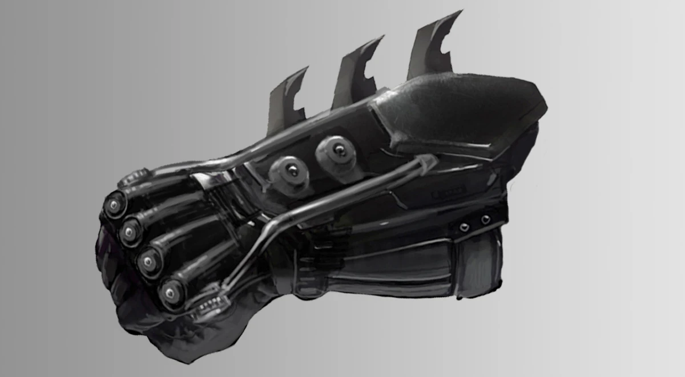
Shock Gloves
Specialized highly advanced gauntlets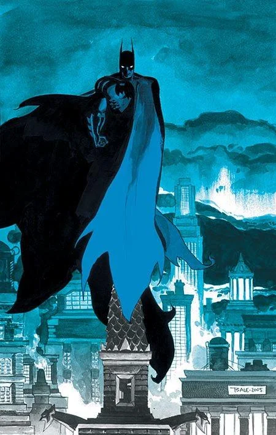
Cape
Turns into a glider and can cape stun enemies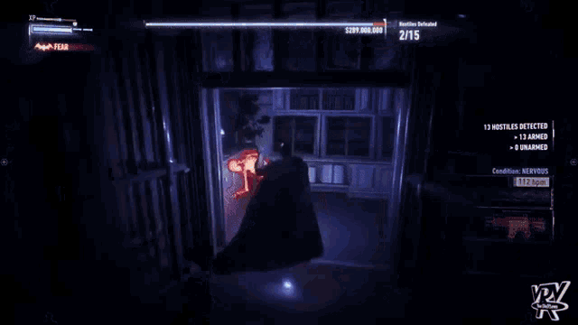
Detective Mode
Advanced analytical system that enhances perception and highlights clues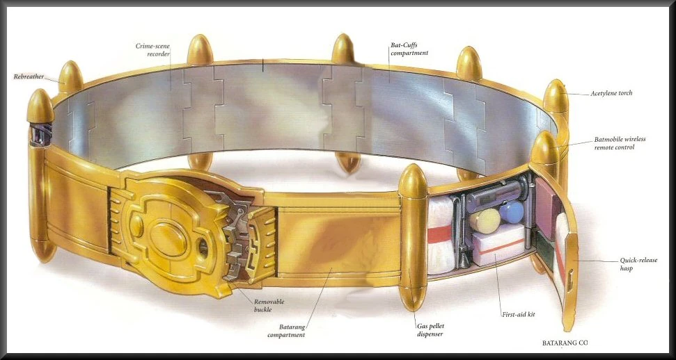
Utility Belt
High-tech storage system worn around the waist that contains specialized tools and gadgets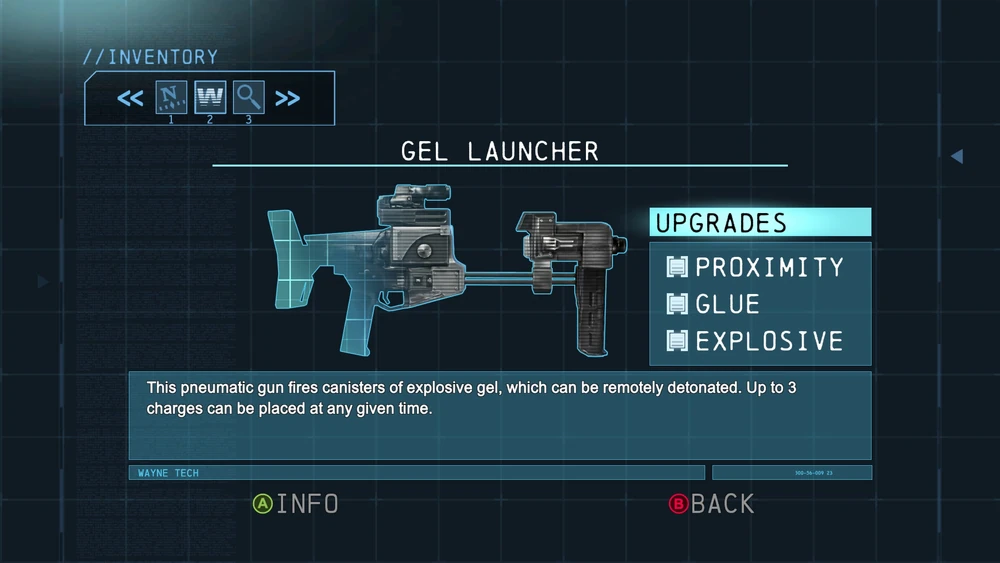
Gel Launcher
a rifle that can be used to fire Explosive Gel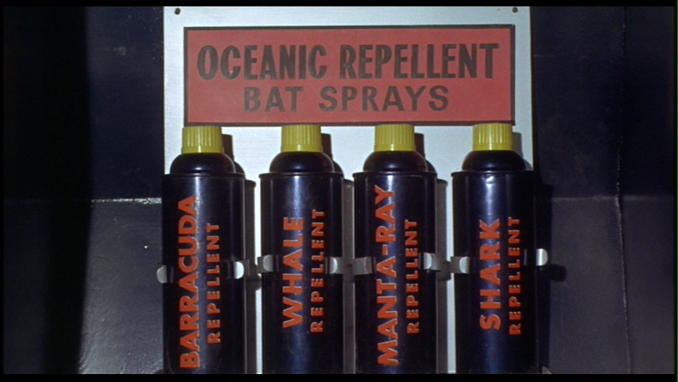
Oceanic Repellents
Makes Jaws go Bye ByeFINAL PASSWORD HINT: BUTTLER
Allied Contacts

Alfred
Alfred Pennyworth. Long time Wayne family butler. Maintains the Batcave and helps remotely. A trusted friend.

Batgirl
Barbra 'Oracle' Gordan. Daughter of Commissioner Gordon. Relible ally

Nightwing
Dick Grayson. Former Robin. Reliable ally

Commissioner Gordon
Jim Gordon. GCPD Commissioner. Coordinates crime responses. Reliable ally

Lucius Fox
Wayne Enterprises technology director. Designs advanced equipment and the Batcomputer systems. Reliable ally

Catwoman
Selina Kyle. Skilled thief who loves to flirt. CONTACT ONLY FOR EMERGENCIES

Robin
Damien Wayne. Bruce Wayne's son. CONTACT IF HE HASN'T DONE HIS HOMEWORK

Red Hood
Jason Todd. unstable ally. LOCATION UNKNOWN

Superman
Clark Kent. Lives in Metropolis. Member of the Justice League. CONTACT ONLY FOR EMERGENCIES

Wonder Woman
Diana Prince of Themyscira. Amazonian warrior and Justice League member. CONTACT ONLY FOR EMERGENCIES

JUSTICE LEAGUE
Team of metahumans assembled for planet level threats. CONTACT ONLY FOR EMERGENCIES (or if The Flash needs a date...again)